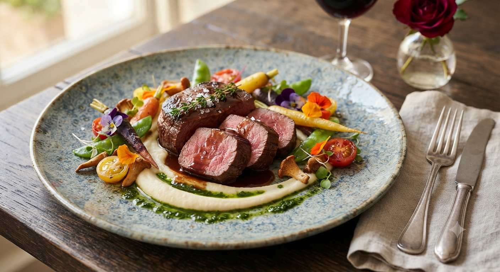
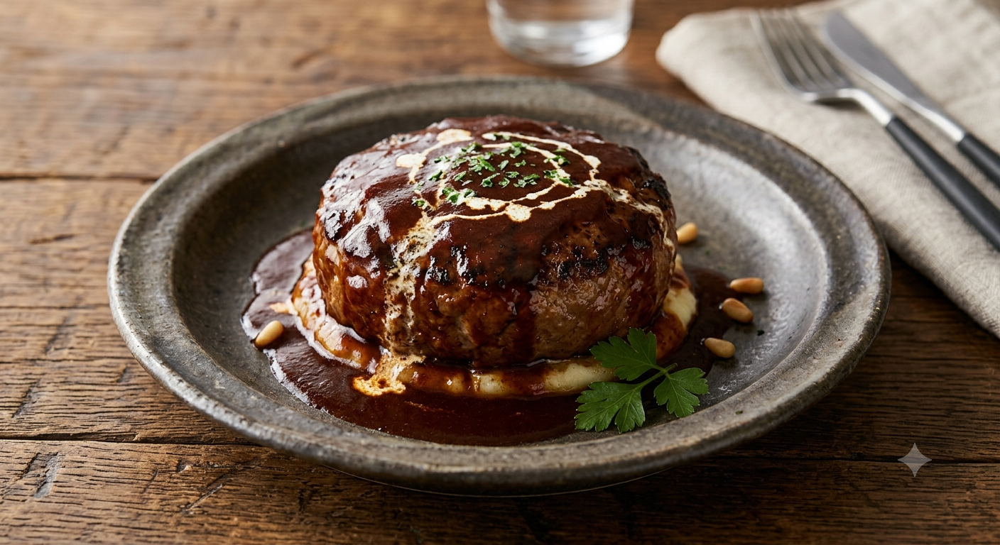

いわて短角牛100%使用。
外はカリッ、中はしっとり、溢れる赤身の旨み。
「脂っこさ」ばかりで、肉本来の味が薄い
つなぎが多くて、食感がフニャフニャしている
本当に価値のある「短角牛」を安く食べたい

パン粉や牛乳などの余計なものは一切入れない。だから、肉の香りが圧倒的に違います。
店主こだわりの鉄板さばき。表面を焼き固めることで、短角牛特有の旨み成分を逃しません。
店内は赤いソファが圧巻の、ハイセンスな空間。ベジタブル鞣しの革の仕切りがあるテーブル席は、盛岡でも珍しいこだわりの設えです。小規模店ならではの丁寧な接客で、お客様の声にお応えします。
「オーナーは最初は無愛想かと思いきや、とても優しく丁寧な対応でした！」
— お客様の声より
パイオニアファームがこれから仕掛ける、新しいお楽しみ・新メニューの構想をご紹介します。
「ステーキもハンバーグもローストビーフも、少しずつ全部食べたい！」という欲張りな声から誕生。短角牛の魅力を一皿で味わい尽くす贅沢なセットメニューを新設予定。
「夜にワインと合わせてじっくりお肉を楽しみたい」という常連様のリクエストにお応えし、週末の夜限定で特別なタパスや限定ワインを提供する肉バル営業を計画中。